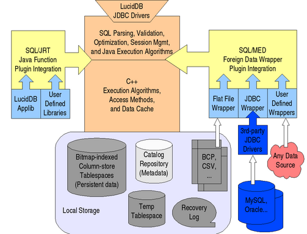

LucidDB Architecture

The core consists of a top-half implemented in Java and a bottom half
implemented in C++. This hybrid approach yields a number of advantages:
- the Java portion provides ease of development, extensibility, and
integration, with managed memory reducing the likelihood of security exploits
- the C++ portion provides high performance and direct access to
low-level operating system, network, and file system resources
- the Java runtime system enables machine-code evaluation of SQL
expressions via a combination of Java code generation and just-in-time
compilation (as part of query execution)
The sections below provide high-level overviews of some of the most
innovative components.
Column Store and Bitmap Indexes
Recent
DBMS research has established the superiority of a "column-store"
architecture for read-mostly database systems such as LucidDB.
In LucidDB, database tables are vertically partitioned and stored in a
highly compressed form. Vertical partitioning means that each page
on disk stores values from only one column rather than entire rows; as
a result, compression algorithms are much more effective because they
can operate on homogeneous value domains, often with only a few
distinct values. For example, a column storing the state component of
a US address only has 50 possible values, so each value can be stored
using only 6 bits instead of the 2-byte character strings used in a
traditional uncompressed representation.
Vertical partitioning also means that a query that only accesses a
subset of the columns of the referenced tables can avoid reading the
other columns entirely. The net effect of vertical partitioning is
greatly improved performance due to reduced disk I/O and more
effective caching (data compression allows a greater logical dataset
size to fit into a given amount of physical memory). Compression also
allows disk storage to be used more effectively (e.g. for maintaining
more indexes).
The companion to column store is bitmap indexing, which has well-known
advantages for data warehousing. LucidDB's bitmap index
implementation takes advantage of column store features; for example,
bitmaps are built directly off of the compressed row representation,
and are themselves stored compressed, reducing load time
significantly. And at query time, they can be rapidly intersected to
identify the exact portion of the table which contributes to query
results. All access paths support asynchronous
I/O with intelligent prefetch for optimal use of disk bandwidth.
It should be noted that LucidDB is not suitable for use as a
transactional database. LucidDB is very fast at bulk-loading or
updating large amounts of data at once, but it is not intended to work
well for the single-row operations typical of transactional systems.
Best practice is to separate analytical systems from transactional
systems; LucidDB can be used as a data warehouse, data mart, or
operational data store in tandem with the traditional transactional
systems used as data sources.
More
information on data storage and access in LucidDB is available.
Page Versioning
Although LucidDB is primarily intended as a read-only data warehouse,
write operations are required for loading data into the warehouse. To
allow reads to continue during data loads and updates, LucidDB uses
page versioning. Data pages are read based on a snapshot of the data
at the start of the initiating transaction. When a page needs to be
updated, a new version of the page is created and chained from the
original page. Each subsequent write transaction will create a new
version of the page and add it to the existing page chain. Therefore,
long-running, read-only transactions can continue to read older
snapshots while newer transactions will read more up-to-date
snapshots. Pages that are no longer in use can be reclaimed so the
page chains don't grow forever.
By versioning at the page level, the overhead of locating the desired data
snapshot is minimized. LucidDB is able to quickly identify the appropriate
page by walking through the page chain metadata.
There's no need to manipulate data at the row-level, or to reconstruct a
snapshot based on previously logged information.
More
information on concurrency control in LucidDB is available.
Query Optimization and Execution
LucidDB's optimizer is designed with the assumptions of a data
warehousing environment in mind, so no hints are needed to get it to
choose the best plan for typical analytical query patterns. In
particular, it supports star joins based on bitmap indexes via a
well-known
semijoin technique, meaning that usually the only fact table rows
accessed are those actually needed to compute query results. The
optimizer uses a mix of heuristics and cost-based analysis to achieve
hint-free planning.
In particular, cost-based analysis is used to determine the order in
which joins are executed, as well as which bitmap indexes to use when
applying table-level filters and star join optimizations. The
analysis uses data statistics gathered and stored as metadata in the
system catalogs, allowing the optimizer to realistically compare one
option versus another even when many joins are involved. By using
cost-based analysis in a targeted fashion for these complex areas,
LucidDB is able to consider a large space of viable candidates for
join and indexing combinations. By using heuristics in other areas,
LucidDB keeps optimization time to a minimum by avoiding an explosion
in the search space.
The query executor includes a high-performance sorter, hash join, and
hash aggregation. All of these execution algorithms are optimized to
take best advantage of available memory. A built-in resource governor
assigns memory, balancing between availability and the needs of
various operations. The resource governor uses statistics-based
optimizer estimates for predicting which algorithms need the most
memory to perform well, and distributes available memory accordingly.
The execution algorithms are also capable of multi-level disk-based
partitioning for handling even the largest data sets. The hash-based
algorithms include adaptive skew-resistance and pre-filtering. The
only limit on the data size that can be processed is available temp
disk space.
Built-in ETL
LucidDB is capable of executing extract/transform/load processes
directly as pipelined SQL statements, without any external ETL engine
required. This is made possible via a number of features:
- Extraction of external metadata and data via SQL/MED: LucidDB
comes with out-of-the-box support for extracting from flat files and
JDBC data sources. Additional foreign data wrappers can be plugged in
to make any data source look like a schema of relational tables. For
example, a wrapper has been written for access to Salesforce.com web
services; each Salesforce object can be queried as a table, with SQL
expressions such as filters pushed down into the webservice call via
an optimizer rule.
- Pipelined Java transformations (a.k.a. UDX): LucidDB supports the
creation of "table functions" implemented as Java routines; these
functions take one or more cursors as input and produce a new cursor
as output, meaning they can be incorporated directly into SQL
statements. For example, a data clustering algorithm can be
implemented in Java and invoked as a pipelined operator in a SQL
query, allowing complex ETL functions such as name and address
matching to be executed without the need to materialize intermediate
temporary tables. LucidDB's hybrid Java/C++ architecture is optimized
for efficient batching of tuples back and forth across the JNI
boundary between managed and unmanaged memory. All threads run in a
single process and Java virtual machine, and calls across the JNI
boundary do not require extra threads, so there is no inter-process
communication overhead. For more information, see the UDX HOWTO.
- Bulk-load via INSERT and UPSERT: no separate bulk-load utility is
required; instead, the SQL INSERT statement does the job directly,
selecting from a query consisting of SQL operators such as join and
minus, Java transformations, and SQL/MED sources. LucidDB also
supports the SQL:2003 standard MERGE statement for implementing
upsert. All DML operations (including DELETE) are fully recoverable
via table-level locking and page-level logging; for efficiency, no
record-level logging or locking is needed. Errors due to constraint
violations can be written
to a reject file without aborting the load.
- Read/write concurrency with snapshot consistency: readers
(e.g. report execution) are never locked out by bulk load,
update, or deletion.
- Sequence support: via the GENERATED clause in surrogate key
column definitions.
- Application library: LucidDB comes with applib, a library
of commonly used ETL and analytical functions and transformation,
e.g. a calendar table generator.
To learn more about the LucidDB approach to ETL, try the ETL
tutorial
OLAP Integration
Because LucidDB has a Java top-half, it can be deployed into a
J2EE application server. This means it is very easy to make it
run side-by-side with the Mondrian pure-Java OLAP engine,
enabling direct in-process JDBC calls from Mondrian into LucidDB with
no communications overhead. And the SQL queries issued by Mondrian
for implementing MDX statements from an OLAP client are of exactly the
form LucidDB's optimizer was designed for. The LucidDB roadmap
includes proposed features for tighter integration, such as unified
metadata management and DDL statements for cube creation. First steps
on this roadmap are available in the form of Mondrian
source replication support, along with automatic
aggregate table generation.